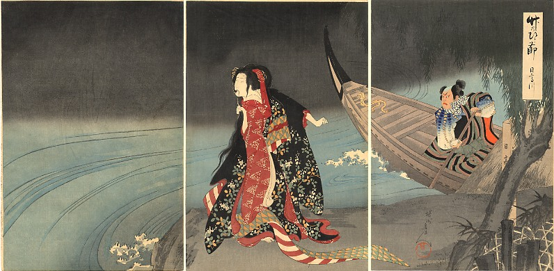

清姬
簡介
很久很久以前，大約千年，有位超帥的和尚名叫「安珍」，每年都會遠從東北前往和歌山熊野參拜，每次總下榻在和歌山某處人家，這戶人家有個女兒稱作「清姬」，年紀雖小但長得可愛，當安珍來訪，都纏著他玩，安珍也常逗說有天會娶清姬回家，但他不知道，純真的清姬小小年紀，早已把話當真。
又是安珍前往熊野參拜而下榻的時候，這天半夜，清姬潛入安珍房內想獻身於他，安珍心想自己不該多嘴讓女孩認真，告訴她自己是修佛之人無法娶她，但不論怎麼說，清姬都不願離開，安珍只好請她等，等他從熊野回來時一定再來找她，當然我們都知道故事一定是清姬天天盼啊盼也等不到安珍回來，於是她決定離家尋找安珍。
清姬望熊野走，一路上不斷問著「見過名為安珍的和尚嗎？」、「請問認識安珍嗎？」，沒想到最後遇上路人告訴她，安珍從熊野回來的路上已走另外一條路離開，發現自己被騙的清姬沿著路人所指的方向瘋狂奔跑，跑著跑著，頭髮亂了，跑著跑著，衣服破了，跑著跑著，鞋子也掉了，清姬披頭散髮、一身狼狽，雙腳也因赤足而血跡斑斑，但她彷彿沒有痛覺般依舊奔著，嘴裡連吼「安珍你在哪裡！」沒多久，她追上安珍，大喊著「安珍啊啊啊啊啊」，安珍一回頭，天啊，怎麼有個鬼女在叫他，連忙大喊「認錯人啦！我不是安珍。」並死命跑著，見安珍拔腿就跑，清姬更是氣得狂追，她嘴裡噴著怒火，漸漸化身成蛇緊隨安珍身後。
安珍逃到了道成寺，請求道成寺和尚幫忙，道成寺和尚沒好辦法，慌亂把安珍藏在梵鐘裡，化為鬼蛇的清姬此時上門，嚇得道成寺和尚四竄，不一會兒，清姬找到了藏在梵鐘裡的安珍，身軀卷在鐘外。「找到你了，這該死的安珍。」她對著梵鐘用力噴火，讓安珍活活烤死鐘裡，最後清姬哭著離去，身影化在河裡消失不見蹤跡。